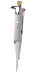
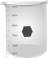
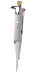
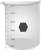

1. Prepare a standard K2Cr2O7 aqueous solution of strength nearly 3×10-3 M in 0.01 N H2SO4 (for the experiments described here we have used a solution of strength = 3.16×10-3 M. This is used as stock solution.
2. From the above stock solution, prepare five different concentrations of K2Cr2O7 solutions: say, 0.158 mM, 0.316 mM, 0.474 mM, 0.632 mM, and 0.790 mM.
3. Switch on the computer and the instrument powers; wait for 30 minutes for ‘warm-up’ of the instrument.
4. In the instrument one can select light sources (UV and visible), choose the slit width, scan speed and %transmittance or absorbance display, wavelength range of interest, etc.
5. Take two clean and dry glass (only for visible range scan) or quartz cuvettes with a given path length (say, 1 cm).
6. Fill up one cuvette with sample blank (aq. 0.01 N H2SO4 in the present case) and the other cuvette with aqueous K2Cr2O7 solution with lowest concentration.
7. Place the sample blank in the reference holder and the sample in the sample holder.
8. Run the scan (A or %T versus λ).
9. Similarly spectral runs are done for all the other samples starting from the lowest concentrations to next higher concentrations of K2Cr2O7. Every time one should rinse the cuvette taking a small portion of the solution to be analyzed next.
10. Spectral run is carried out for the unknown K2Cr2O7 sample.
11. Now find out the wavelengths of maximum absorbance (λmax), the absorbance at a given λmax for all the concentrations of K2Cr2O7 and make a table containing these data.
12. Construct a calibration plot by plotting absorbance versus concentration for a given λmax. Thus one construct two calibration plots for two peak positions of K2Cr2O7.
13. Determine the slopes of the calibration plots and hence the respective values of λ’s.
14. Determine the concentration of the unknown K2Cr2O7 solution from two calibration plots.

 


